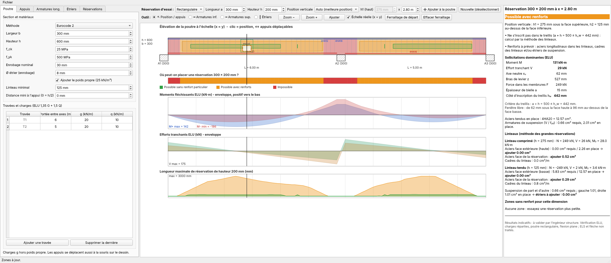
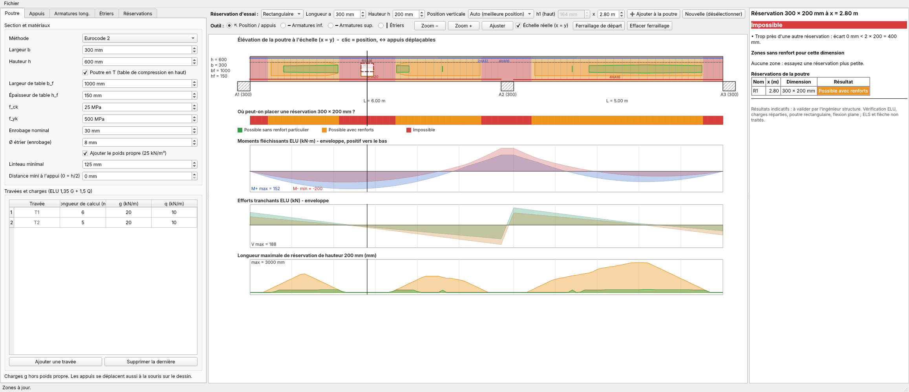
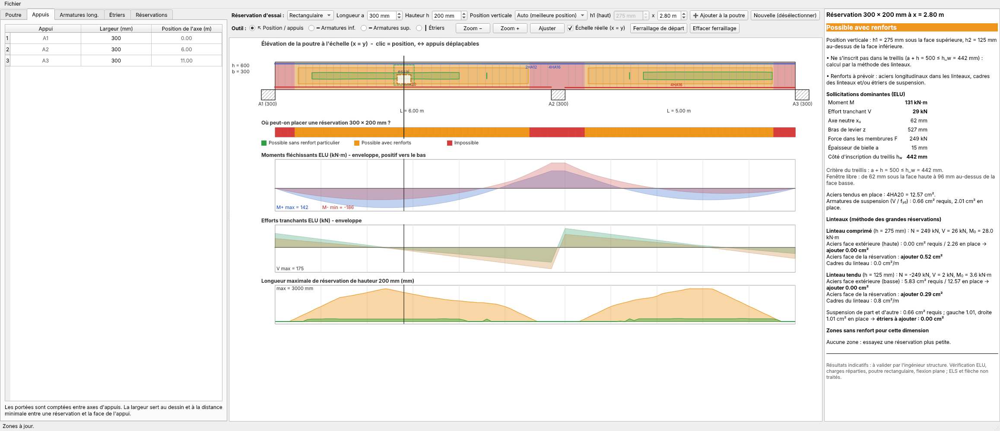
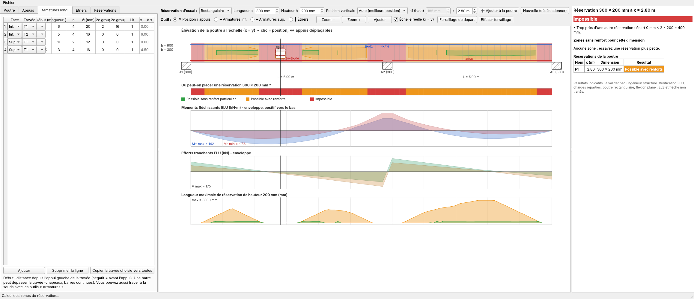
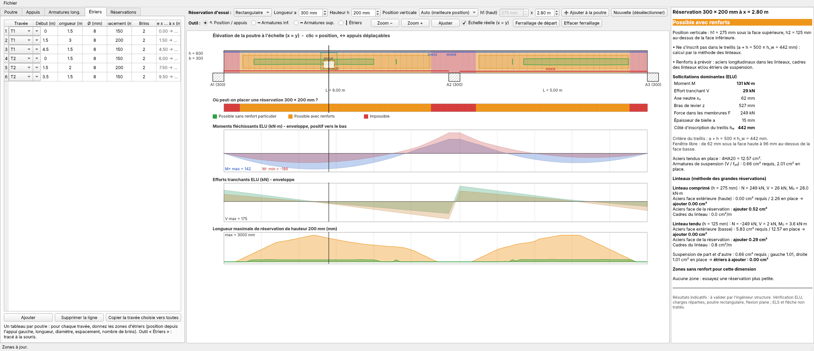
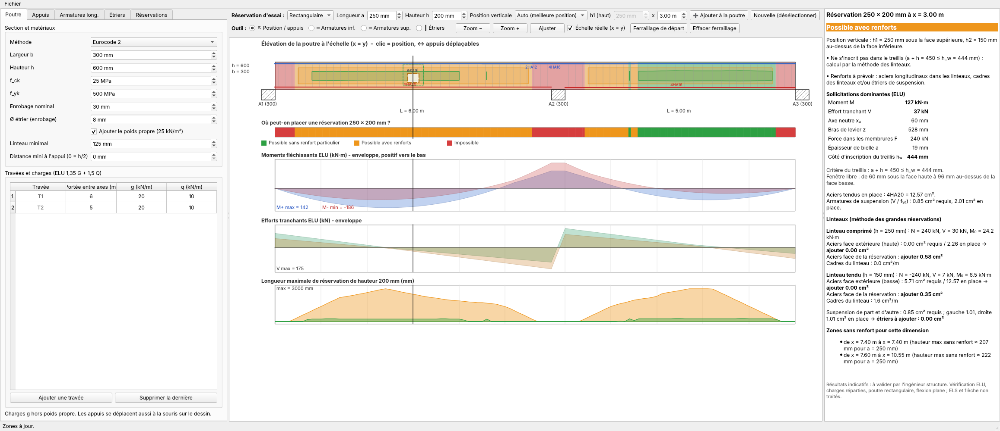
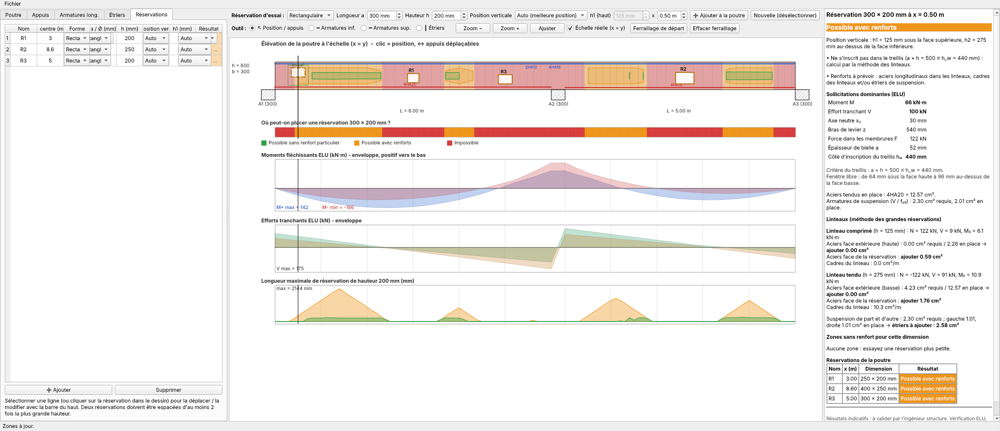
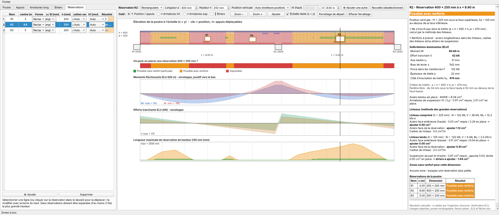
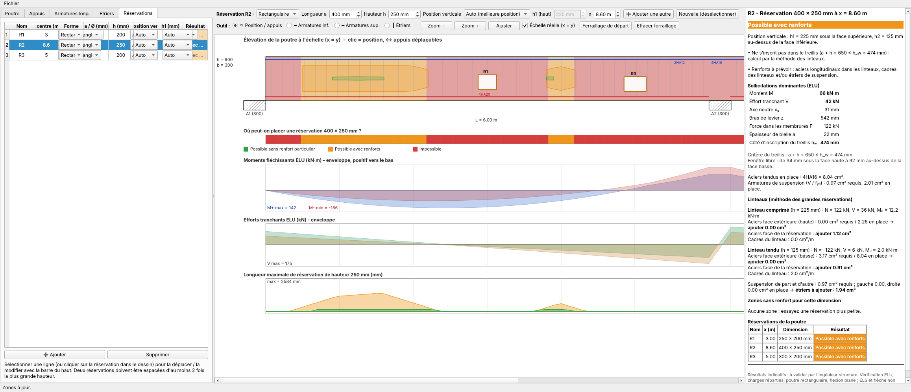

Livret d'utilisation – logiciel de recherche des zones de réservations (trémies, fourreaux) dans une poutre continue en béton armé, Eurocode 2 ou BAEL 91.
Youssef Alaoui – alaoui.youssef1996@gmail.com

| Zone | Rôle |
|---|---|
| Colonne gauche (onglets) | Poutre, Appuis, Armatures longitudinales, Étriers, Réservations |
| Barre du haut | Réservation d'essai : forme, dimensions, position verticale, abscisse x ; boutons d'ajout |
| Centre | Élévation de la poutre à l'échelle réelle, bande de verdict, enveloppes M et V, longueur maximale admissible |
| Colonne droite | Verdict détaillé de la réservation d'essai (efforts, treillis, linteaux, aciers à ajouter) et tableau récapitulatif |
Onglet Poutre : méthode (Eurocode 2 / BAEL 91), largeur b, hauteur h, fck, fyk, enrobage, poids propre, linteau minimal (125 mm) et distance minimale à l'appui (0 = h/2). Le tableau des travées donne la longueur de calcul de chaque travée (longueur de la poutre − appuis : les appuis sont de simples discontinuités, sans longueur dans le calcul), charges permanentes g et d'exploitation q (kN/m). Boutons Ajouter une travée / Supprimer la dernière. Les appuis peuvent aussi être glissés à la souris dans le dessin.
Poutre en T. Cocher « Poutre en T » puis donner la largeur efficace de table bf et son épaisseur hf (la table est en haut). Le poids propre, la flexion (axe neutre dans la table ou dans l'âme), le bloc comprimé et le calcul du linteau comprimé en tiennent compte sous moment positif ; sous moment négatif la table est tendue et la zone comprimée est l'âme (largeur b). Une réservation dont le haut est dans la table (h1 < hf) est refusée. La ligne pointillée du dessin marque le bas de la table.


Onglet Appuis : largeur de chaque appui (mm). Les appuis sont dessinés à leur largeur réelle, insérée entre les travées. Dans le calcul ils n'ont pas de longueur (discontinuité) : les longueurs de travée saisies sont les longueurs libres, et toutes les abscisses (barres, étriers, réservations) sont comptées sans les appuis. La distance minimale d'une réservation est mesurée depuis l'appui.

Onglet Armatures long. : une ligne par groupe de barres : face (inf./sup.), travée, début (distance depuis l'axe de l'appui gauche de la travée ; négatif = avant l'appui), longueur, nombre n, diamètre Ø, 2e groupe (n, Ø) pour mélanger deux diamètres sur la même ligne (ex. 4HA20 + 2HA16), lit. La colonne de droite donne l'abscisse absolue. Une barre peut déborder de la travée (chapeaux, barres continues). Alternative : outils Armatures inf./sup. pour tracer à la souris. Le bouton Ferraillage de départ génère une proposition à ajuster.

Onglet Étriers : pour chaque travée, une ou plusieurs zones (début, longueur, Ø, espacement, brins). Exemple : T1 = HA8 e=150 sur 1,5 m, e=200 sur 3 m, e=150 sur 1,5 m. Le bouton Copier la travée choisie vers toutes accélère la saisie.

Régler dans la barre du haut la forme (rectangle ou cercle), la longueur a, la hauteur h, la position verticale (Auto cherche la meilleure, Centrée, ou Manuelle avec h1 depuis la face supérieure) et l'abscisse x (curseur, ou simple clic dans le dessin). Le cadre pointillé « essai » montre la réservation ; la colonne de droite donne le verdict :
| Vert | La réservation s'inscrit dans le treillis de Mörsch (EC2, chap. 6) : aucun renfort particulier. |
| Orange | Possible avec renforts : le logiciel calcule les aciers à ajouter (linteaux, suspension, cadres) par la méthode des grandes réservations. |
| Rouge | Impossible, avec la raison (trop près d'un appui, d'une autre réservation, linteau trop mince, zone comprimée coupée, barres coupées…). |
La bande colorée sous la poutre et la courbe du bas montrent, pour la dimension choisie, toutes les positions admissibles et la longueur maximale pour la hauteur choisie.


Cliquer sur une réservation dans le dessin ou sur sa ligne du tableau : elle est sélectionnée et la barre du haut permet de la déplacer ou de la redimensionner. Supprimer l'enlève ; Nouvelle (désélectionner) revient à l'essai libre.

L'option Échelle réelle (x = y) dessine la poutre avec la même échelle en longueur et en hauteur (h = 600 mm reste proportionné à 6 m de portée). Zoom +/− et Ajuster agrandissent le dessin, avec défilement horizontal.
Menu Fichier : ouvrir / enregistrer le projet (.json, avec armatures, appuis et réservations), exporter le dessin en PNG, exporter le rapport en HTML.
Menu Aide : manuel PDF, téléchargement du code source (zip), téléchargement de l'exécutable Windows (GitHub Releases), page du projet et À propos / Contact (auteur : Youssef Alaoui, alaoui.youssef1996@gmail.com). Le contact s'affiche aussi en bas à droite de la fenêtre et dans la note de calcul HTML exportée.
Cette annexe décrit ce que le logiciel calcule réellement. Notation : b, h (largeur, hauteur), d (hauteur utile), fcd = fck/1,5 (EC2, αcc = 1) ou 0,85 fc28/1,5 (BAEL), fyd = fyk/1,15. Unités internes : mm, N, MPa.
Avec les aciers tendus réellement présents dans la fenêtre (section As et profondeur du centre de gravité, calculées avec les diamètres saisis) :
μ = M / (b d² fcd) ; ξ = 1,25 (1 − √(1 − 2μ)) ; xu = ξ d ; z = d (1 − 0,4 ξ) ; F = M / z (effort dans chaque membrure).
Source : « Les grandes réservations dans les poutres », chap. 5-6. La poutre fissurée fonctionne comme un treillis : membrures comprimée et tendue, bielles inclinées de compression, montants tendus (étriers). Une petite ouverture qui laisse passer ce treillis ne demande aucun renfort.
Source : BAEL 91, chap. 11 (méthode des linteaux), adaptée à l'Eurocode 2 pour les résistances. La poutre est découpée au droit de l'ouverture en deux « linteaux » (haut h1, bas h2) qui se comportent chacun comme une petite poutre.
Numérotation (E1)… utilisée dans l'exemple. Notations : fcd = fck/γc (EC2) ou 0,85 fc28/γb (BAEL), γc = 1,5 ; fyd = fyk/1,15 ; d = h − d′ où d′ = profondeur du centre de gravité des aciers tendus mesurée depuis leur face : d′ = enrobage + Ø étrier + Ø/2 + (lit − 1)(Ø + max(Ø ; 25 mm)). Pour une ligne à deux diamètres, Ø est le plus gros des deux et A = Σ ni π Øi²/4.
| (E1) | Charge ELU de la travée j : wj = 1,35 (gj + pp) + 1,5 qj ou 1,35 (gj + pp) si Q est absente ; pp = 25 [b h + (bf − b) hf] (kN/m, dimensions en m) |
| (E2) | Rotations : K θ = −F, avec Kjj = 4/Lj + 4/Lj−1, Kj,j+1 = 2/Lj, Fj = −wjLj²/12 + wj−1Lj−1²/12 (EI = 1, appuis sans tassement) |
| (E3) | Moments d'extrémité de la travée : Mab = (2/L)(2θa + θb) − wL²/12 ; Mba = (2/L)(2θb + θa) + wL²/12 |
| (E4) | Moment sagging positif dans la travée : M(x) = Mab + V0 x − w x²/2, avec V0 = (M(L) − M(0) + wL²/2)/L et M(L) = −Mba ; V(x) = V0 − w x |
| (E5) | Enveloppes : Mmax(x), Mmin(x), Vmax(x), Vmin(x) sur les 2n dispositions de Q ; γ(x) = Mu(x)/Ms(x) pour le même cas (Ms avec 1,0 G + 1,0 Q) |
| (F1) | μ = M / (b d² fcd) (b → bf si la table est comprimée et que 0,8 xu ≤ hf) |
| (F2) | ξ = 1,25 (1 − √(1 − 2μ)) ; xu = ξ d ; z = d (1 − 0,4 ξ) |
| (F3) | μ ≤ μlim : F = M / z | μ > μlim : F = Mlim/zlim + (M − Mlim)/(d − dc), Mlim = μlim b d² fcd (dc = profondeur des aciers comprimés) |
| (F4) | μlim = 0,372 (EC2) ; μlim = (3220 γ + 51 fc28 − 3100) / 10⁴, borné à [0,2 ; 0,372], fc28 ≤ 30 MPa (BAEL) |
| (F5) | Acier comprimé nécessaire : A′ = (M − Mlim) / ((d − dc) σsc) ; σsc = fyd (EC2) ; σsc = 9 γ fc28 − δ′ (13 fc28 + 415), borné à [0,4 fyd ; fyd], δ′ = dc/d (BAEL) |
| (F6) | Poutre en T, 0,8 xu > hf : Mf = (bf − b) hf fcd (d − hf/2) ; l'âme prend M − Mf (formules F1-F3 avec b) ; F = (bf − b) hf fcd + Fâme ; z = M/F |
| (T1) | av = 2 V / (b σlim) ; σlim = 0,85 (1 − fck/250) fcd (EC2) ; σlim = 0,8 fc28/γb (BAEL) |
| (T2) | mc = 0,4 xu + max(0,6 xu ; av) (côté comprimé) ; mt = 2 (h − d) (côté tendu) |
| (T3) | hw = h − mc − mt |
| (T4) | Rectangle : a + ho ≤ hw ; cercle : Ø ≤ (2 − √2) hw ; position : h1 ≥ marge haute et h1 + ho ≤ h − marge basse (M < 0 : mc et mt permutés) |
| (T5) | Suspension : Asw,req = V / fyd ; Asw,exist = Σ (nombre de cours d'étriers dans une fenêtre de largeur max(hw, a, 100 mm) centrée sur l'ouverture) × brins × π ز/4 |
| (L1) | Linteau comprimé : hc ; linteau tendu : ht (M > 0 : hc = h1, ht = h2 ; M < 0 : inversés). Condition : 0,8 xu ≤ hc |
| (L2) | Effort normal : Nc = +F à ec = hc/2 − 0,4 xu au-dessus du centre du linteau ; Nt = −F à et = −(ht/2 − d′) (au niveau des aciers tendus) |
| (L3) | Tranchant : Vc = V hc³/(hc³ + ht³) si a ≥ max(h1, h2) ; sinon Vc = V hc/(hc + ht) ; Vt = V − Vc |
| (L4) | Moments : M0 = N · e ; Mext = M0 ± Vi a / 2 (les deux extrémités sont dimensionnées) |
| (L5) | Flexion composée : MA = Mext + N (di − hi/2) ; μ, ξ, z comme (F1-F2) avec di = hi − d′i ; A = MA/(z fyd) − N/fyd (compression : N > 0) |
| (L6) | Section entièrement tendue (e0 = M/N entre les nappes, avec yb = −(h/2 − d′bas), yt = h/2 − d′haut) : Ahaut = |N| (e0 − yb) / ((yt − yb) fyd) ; Abas = |N| (yt − e0) / ((yt − yb) fyd) |
| (L7) | Acier à ajouter : face extérieure = max(0 ; Arequis − Aen place) ; face de l'ouverture = Arequis. Limite : Ahaut + Abas ≤ 0,04 b hi |
| (L8) | EC2 : zi = 0,9 di ; VRd,max = b zi ν1 fcd/2, ν1 = 0,6 (1 − fck/250) ; VRd,c = [max(0,18 k (100 ρ fck)1/3/γc ; vmin) + 0,15 σcp] b di (linteau comprimé seulement ; k = min(1 + √(200/di) ; 2) ; ρ = min(A/(b di) ; 0,02) ; vmin = 0,035 k3/2 √fck ; σcp = N/(b hi) ≤ 0,2 fcd). Si Vi > VRd,c (ou linteau tendu) : Asw/s = Vi / (zi fyd) |
| (L9) | BAEL : τu = Vi/(b di) ≤ min(0,2 fc28/γb ; 5 MPa) ; At/st = γs b (τu − 0,3 ft28 k) / (0,9 fe) avec ft28 = min(0,6 + 0,06 fc28 ; 3,3) ; k = 1 + 3 σN/fc28 (compression) ou 1 − 10 |σN|/fc28 (traction), σN = N/(b hi) |
| (L10) | Suspension de part et d'autre : Asw,req = V/fyd sur une largeur max(av ; 100 mm) à gauche et à droite ; ajout = max(0 ; req − en placeg) + max(0 ; req − en placed) |
Poutre 300 × 600, C25, fyk = 500 MPa, enrobage 30 mm, étriers Ø8 (d′ = 30 + 8 + 10 = 48 mm pour HA20), travées 6 m et 5 m, g = 20 et q = 10 kN/m (hors poids propre 4,5 kN/m), 4HA20 inf. en T1, étriers HA8 e = 150. Réservation rectangulaire 300 × 200 mm centrée à x = 3,00 m, position verticale « auto ». Les valeurs ci-dessous sont celles produites par le logiciel.
| Étape | Calcul | Résultat |
|---|---|---|
| Données | fcd = 25/1,5 ; fyd = 500/1,15 | 16,67 MPa ; 434,8 MPa |
| Efforts sur [2,85 ; 3,15] (E1-E5) | cas le plus défavorable retenu (M > 0) | M = 127,3 kN·m ; V = 38,3 kN ; γ = 1,39 |
| Aciers tendus | 4HA20 : A = 4 × 314,2 ; d = 600 − 48 | 1257 mm² (12,57 cm²) ; d = 552 mm |
| (F1) | μ = 127,3·10⁶ / (300 × 552² × 16,67) | 0,0836 < 0,372 |
| (F2) | ξ = 1,25 (1 − √(1 − 0,1672)) ; xu = ξ d ; z | ξ = 0,109 ; xu = 60,3 mm ; z = 527,9 mm |
| (F3) | F = M/z = 127,3·10⁶ / 527,9 | 241,2 kN |
| (T1) | σlim = 0,85 × 0,9 × 16,67 = 12,75 MPa ; av = 2 × 38 260 / (300 × 12,75) | av = 20,0 mm |
| (T2)-(T3) | mc = 0,4 × 60,3 + max(36,2 ; 20,0) ; mt = 2 × 48 ; hw = 600 − 96 − 60,3 | mc = 60,3 ; mt = 96 ; hw = 443,7 mm |
| (T4) | a + ho = 300 + 200 = 500 > 443,7 | Ne tient pas dans le treillis → linteaux |
| Position | meilleure position trouvée | h1 = 275 mm (haut), h2 = 125 mm (bas) |
| (L1) | 0,8 xu = 48,2 mm ≤ hc = 275 mm | Zone comprimée non recoupée |
| (L3) | Vc = 38,26 × 275³ / (275³ + 125³) ; Vt = V − Vc | Vc = 35,0 kN ; Vt = 3,3 kN |
| (L2) | Nc = +241,2 kN ; ec = 137,5 − 24,1 ; Nt = −241,2 kN ; et = −(62,5 − 48) | ec = 113,4 mm ; et = −14,5 mm |
| (L4) | M0,c = 241,2 × 0,1134 ; M0,t = −241,2 × (−0,0145) ; ± Vi a/2 (a/2 = 150 mm) | M0,c = 27,3 (extrémités 32,6 et 22,1) ; M0,t = 3,5 kN·m |
| (L5)-(L7) linteau comprimé | aciers face extérieure (haut) : 0,00 cm² requis / 2,26 cm² (2HA12) ; face de l'ouverture | à ajouter : 0,69 cm² |
| (L5)-(L7) linteau tendu | face extérieure (bas) : 5,70 cm² requis / 12,57 cm² en place ; face de l'ouverture | à ajouter : 0,39 cm² |
| (L8) cadres des linteaux | linteau tendu : di = 125 − 48 = 77 ; zi = 69,3 ; Asw/s = 3285 / (69,3 × 434,8) | 1,09 cm²/m (comprimé : 0) |
| (L10) suspension | V/fyd = 38 260 / 434,8 = 88 mm² (0,88 cm²) ; en place : 1,01 cm² de chaque côté | suffisant |
| Verdict | aciers à ajouter dans les linteaux et cadres | Possible avec renforts |
Pour passer en vert, il faut une ouverture plus petite : par exemple 250 × 150 (a + ho = 400 ≤ hw = 468 mm : le logiciel donne alors « sans renfort particulier »).